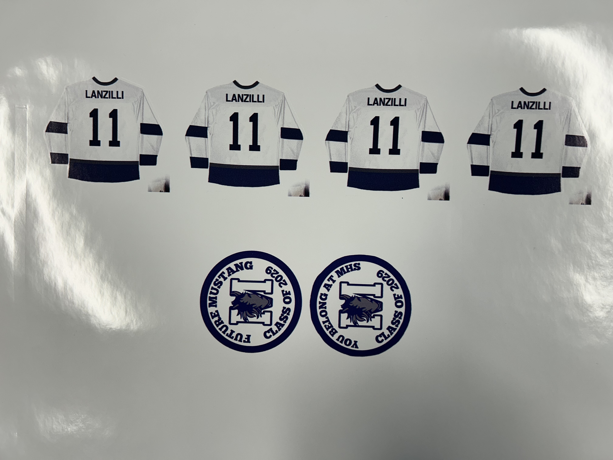
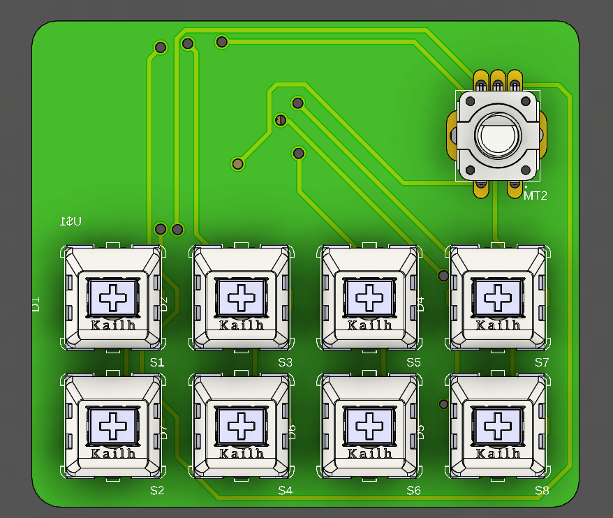
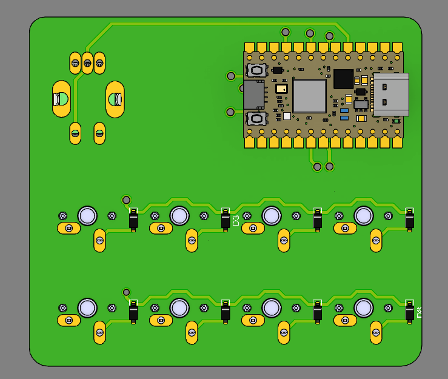
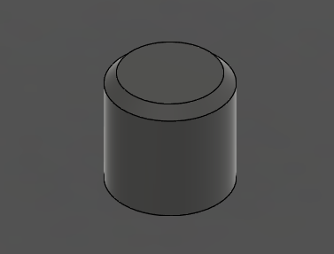
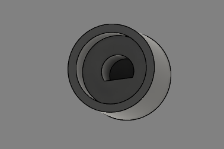
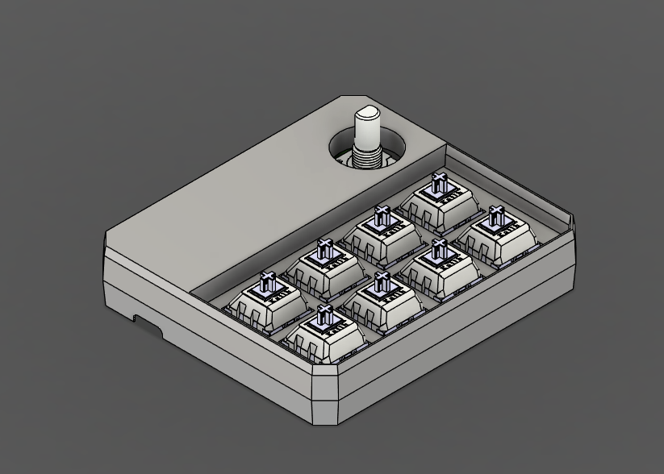
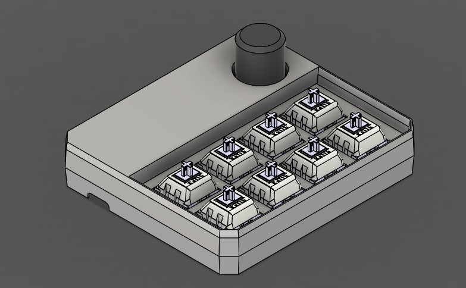

junior week oct. 23rd, 2025
printer updates
so i got it to somewhat work. it's still disconnecting (not sure why still) but i got it to print without it messing up.
full print video

end result for another print run. did 4 to ensure that it worked
still similar findings to first time. the only difference is that i realized that the disconnecting from the printer was always around 5 minutes (in which it would disconnect, and lose some of the data leading to the lost of a strip as seen in last weeks photos)
to counteract this, i let the printer heat up before sending the print. this allowed me to print about 2 things before the printer shut off.
while the prints work, having it disconnect is still extremely unreliable. i was told to call roland support and see if they know any issues, so i'll be doing it sometime over the weekend. for now, it can print to some extent.
macropad updates
been a while since i've worked on it, but i got a little done whenever i was stuck with the printer.
i added 3d models to all of my components a while ago, don't remember when but it looks good.


front and back side with components
i then started with the easiest part, the knob to control volume


simple knob that i made with the help of some other models i found online
with this done, i started working on the top half of the case. i wanted to create a snapfit, so i broke it down into parts.

i'm pretty bad at fusion, so creating this took quite some time. i still have to create a snapfit mechanism, as it currently doesn't have one.
overall, this is what it looks like currently:

bottom side needs to be created, and i'm hoping that the keycaps don't stick up too much...
probably gonna spend next week working on a project for my ap lang class, so will most likely revisit in two weeks